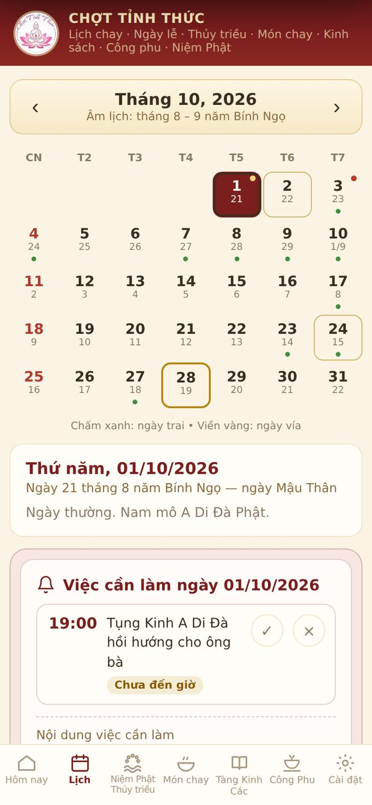
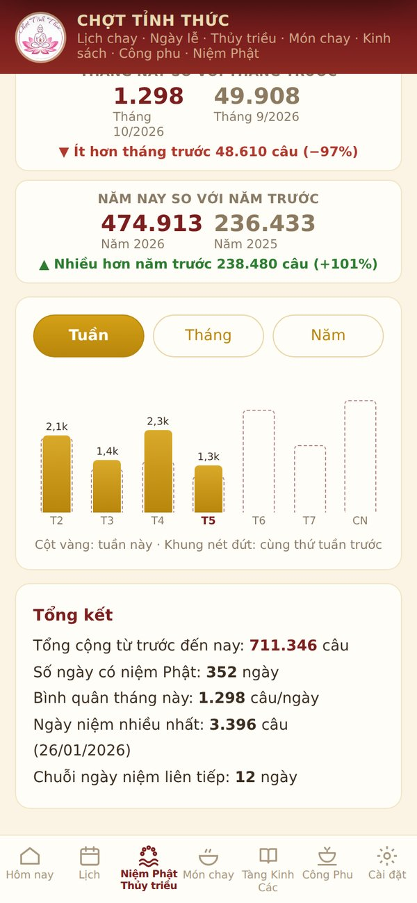
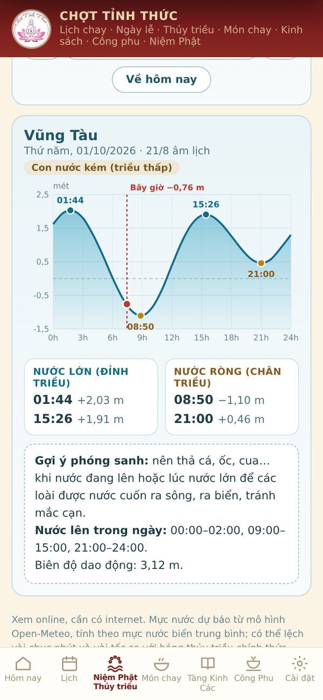
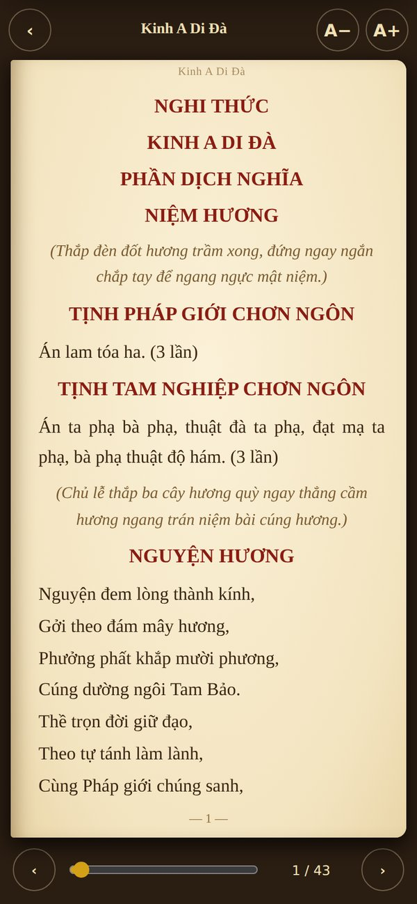
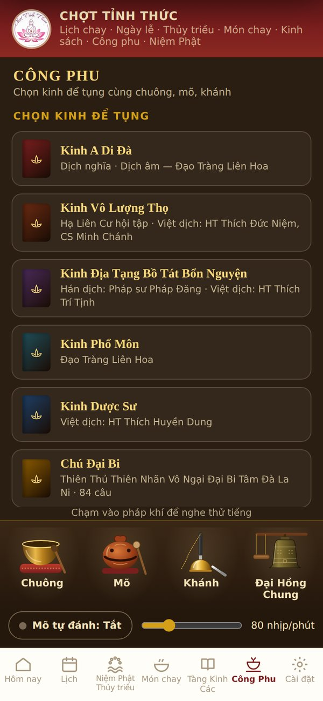

Nhớ ngày chay, ngày vía, đọc tụng kinh, công phu, đếm niệm Phật, nghe pháp và xem thủy triều để phóng sanh — tất cả trong một ứng dụng nhỏ gọn, dễ dùng cho mọi lứa tuổi.


Mọi chức năng đều miễn phí, đa số dùng được khi không có mạng.
Xen kẽ Kinh Pháp Cú (423 câu) và lời chư Phật, chư Tổ, thông báo mỗi sáng.
Lịch âm dương, nhắc ngày trai theo nhị, tứ, lục, thập trai, trường chay và các ngày lễ.
Bấm đếm từng câu, tiếng mõ, rung, chuỗi 108; thống kê theo ngày, tuần, tháng, năm.
Giờ nước lớn, nước ròng tại 34 điểm ven biển Việt Nam, biểu đồ mực nước 24 giờ.
9 bộ kinh, chú, nghi thức; đọc như cuốn sách, lật từng trang, chỉnh cỡ chữ.
Kinh tụng MP3, nhạc niệm Phật, khai thị; kéo thời gian, chỉnh tốc độ nghe.
Tụng kinh cùng chuông, mõ, khánh, đại hồng chung; mõ tự đánh chỉnh tốc độ.
200 món chay tịnh, không ngũ vị tân, có nguyên liệu và cách làm từng bước.
Chữ to rõ, màu sắc trang nghiêm, phù hợp cả người lớn tuổi.





Chỉ cần làm một lần. Lần sau có bản mới, tải và cài đè lên, dữ liệu vẫn giữ nguyên.
Bấm nút Tải về cho Android ở đầu trang, file ChotTinhThuc.apk sẽ được lưu vào máy.
Mở thông báo tải xong hoặc vào mục Tệp / Tải xuống, chạm vào file ChotTinhThuc.apk.
Nếu máy hỏi, chọn Cài đặt → bật "Cho phép từ nguồn này", quay lại bấm Cài đặt.
Mở Chợt Tỉnh Thức, bấm Cho phép để nhận lời nhắc ngày chay, niệm Phật, Lời Phật dạy.
Không làm mọi điều ác, thành tựu các hạnh lành, giữ tâm ý trong sạch; đó là lời chư Phật dạy.— Kinh Pháp Cú, câu 183
Hoàn toàn miễn phí, không quảng cáo, không bán hàng. App được làm ra để cúng dường và hỗ trợ quý Phật tử tu học.
File được tác giả build trực tiếp từ mã nguồn. Máy có thể hiện cảnh báo vì app chưa có trên CH Play, quý vị chọn "Vẫn cài đặt". App không đọc danh bạ, hình ảnh, vị trí.
Đa số chức năng dùng được khi không có mạng. Chỉ thủy triều, nghe MP3, pháp âm và video cần internet.
Hiện app dành cho điện thoại Android. Phiên bản iPhone sẽ được cân nhắc sau.
Tải xong, quý vị làm theo các bước dưới đây. Chỉ cần làm một lần.
Chạm vào thông báo “Đã tải xong ChotTinhThuc.apk”, hoặc vào mục Tệp / Tải xuống rồi chạm vào file.
Nếu máy hiện hộp dưới đây, bấm Cài đặt rồi bật “Cho phép từ nguồn này”, sau đó quay lại.
App chưa có trên CH Play nên máy có thể nhắc kiểm tra. Bấm Chi tiết khác rồi Vẫn cài đặt.
Một số máy chặn hẳn, không có nút “Vẫn cài đặt”. Khi đó tạm dừng Play Protect:
Cài xong nhớ bật lại công tắc này để điện thoại luôn được bảo vệ.
Chữ trên các hộp có thể khác đôi chút tùy dòng máy. App miễn phí, không quảng cáo, không đọc danh bạ, hình ảnh hay vị trí. Thường chỉ cần bấm “Vẫn cài đặt”; bước 4 chỉ dùng khi máy chặn hẳn. Có bản mới thì tải và cài đè lên, dữ liệu vẫn giữ nguyên.